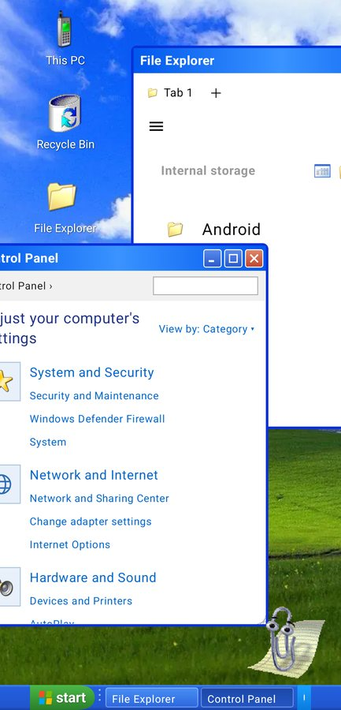

Free · open source · no ads · no account
One phone.
One phone.
Every tool.
Pulse is a Windows desktop for your phone, a task manager, music and video players with real skins, a keyboard, files, a screen cover and a whole toolkit. Every screen is drawn in the look you pick, from Windows 95 to Windows 11, Material and AMOLED.
8looks
30+apps inside
Android 5+every phone
GPL-3.0open source

